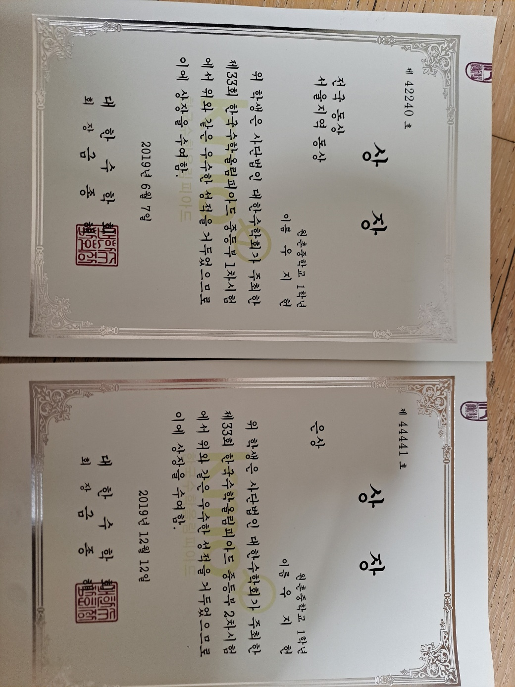
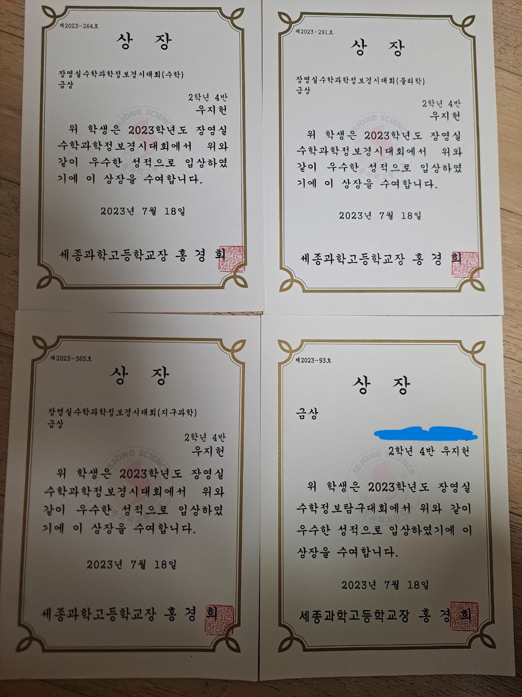

현재 이해원 수학연구소 문항제작자로
일하고 있는 마이너스1수 정시 의대생의 최단기간
성적향상 노하우를 아낌없이 전수해드립니다.
- 수능 성적
- 수상 내역
- 수업 방식
수상 내역
중1: 중등부 수학올림피아드(kmo) 1차시험 동상, 2차시험 은상
중2: 중등부 물리올림피아드 장려상
고1: 장영실 수학과학정보 경시대회(세종과고 교내경시대회) 화학 금상, 생명과학 금상, 수학 동상, 물리학 동상
고2: 장영실 수학과학정보 경시대회(세종과고 교내경시대회) 수학 금상(전체 1위), 물리학 금상(전체 1위), 지구과학 금상(전체 1위)
장영실수학정보탐구대회(세종과고 교내 연구 대회) 금상
중2, 고1때 수상한 상장은 실수로 버렸습니다. 죄송합니다.

